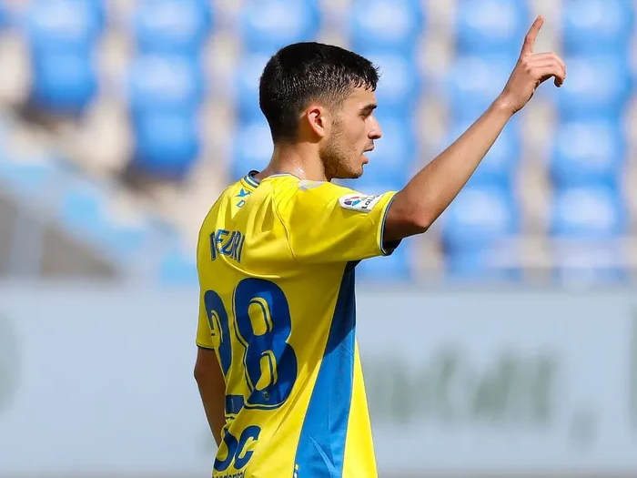
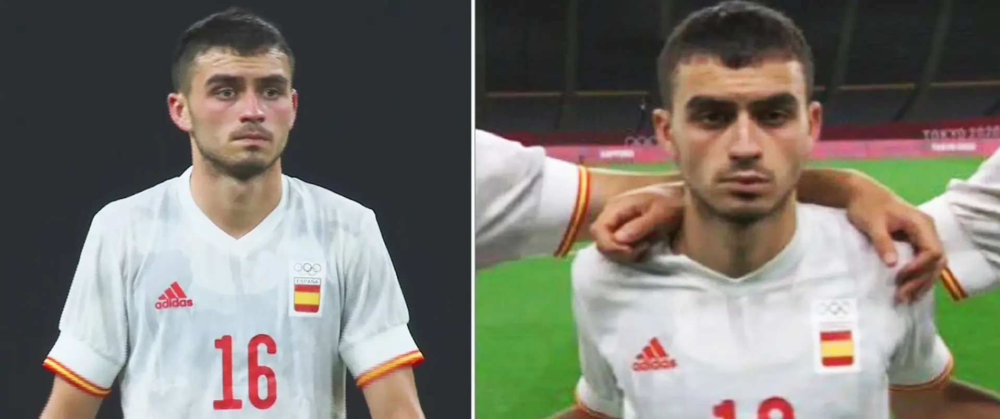
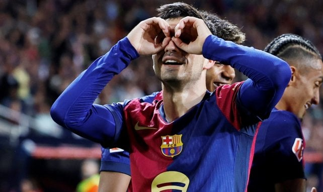

A la temprana edad de 16 años, Pedri no solo debutó en el fútbol profesional, sino que se convirtió en el eje fundamental de la UD Las Palmas. Su capacidad para leer el juego en una categoría tan física como la Segunda División española dejó boquiabiertos a los ojeadores de toda Europa. Fue el jugador que más jugadas de ataque inició en toda la temporada canaria.

Sus primeros pasos como profesional en el Estadio de Gran Canaria.
| Partidos | Goles | Asistencias | Minutos Jugados |
|---|---|---|---|
| 37 | 4 | 7 | 2.833' |
Lo vivido en 2021 fue un fenómeno nunca antes visto en un futbolista de su edad. Pedri enlazó la exigencia del FC Barcelona con la Eurocopa (donde fue titular indiscutible y Mejor Jugador Joven) y, sin descanso, voló a Japón para los Juegos Olímpicos. Esta carga hercúlea de minutos fue un regalo para los aficionados, pero un castigo para sus músculos que empezaron a resentirse poco después.
| Competición (2020/21) | Partidos | Logro Extra |
|---|---|---|
| Club (Barça) | 52 | Campeón Copa del Rey |
| Selección Absoluta (Euro) | 10 | Mejor Joven / XI Ideal |
| Selección Olímpica | 6 | Medalla de Plata |
| Total Año Natural | 73 | Récord Mundial |

En esta imagen se puede apreciar el cansancio en los ojos de nuestro 8.
Esta acumulación excesiva de esfuerzos hizo que su cuerpo dijera "basta". A partir de aquí, Pedri enfrentó un ciclo de lesiones recurrentes que limitaron su presencia hasta mediados de 2024, afectando especialmente su explosividad muscular.
Tras un meticuloso proceso de recuperación, cambio de dieta y entrenamiento específico de fuerza, el Pedri que vemos hoy es la versión definitiva. Ha recuperado la frescura mental de sus inicios pero con un físico mucho más resistente y potente. Su influencia en el juego ha trascendido: ya no solo distribuye, sino que pisa el área con peligro constante y lidera la presión tras pérdida.

La plenitud física y mental del mejor mediocampista del mundo.
| Competición | Partidos | Goles | Asistencias | % Pases Éxito |
|---|---|---|---|---|
| La Liga | 25 | 4 | 10 | 91.5% |
| UEFA Champions League | 9 | 1 | 4 | 89.0% |
| Selección Española | 10 | 2 | 3 | 93.2% |
Estos números demuestran que, a sus 23 años, Pedri ha alcanzado un "prime" que sigue en ascenso y promete dominar la década.